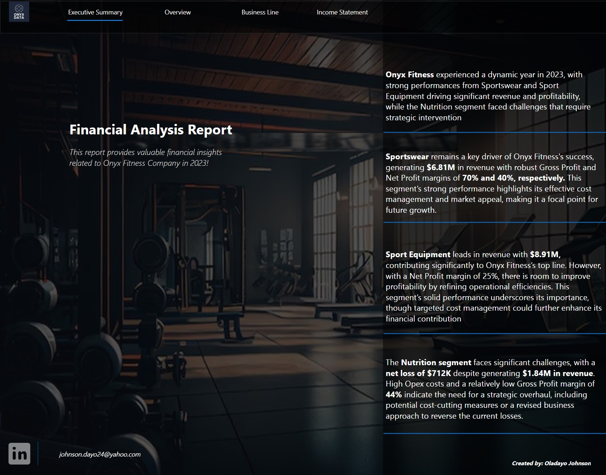
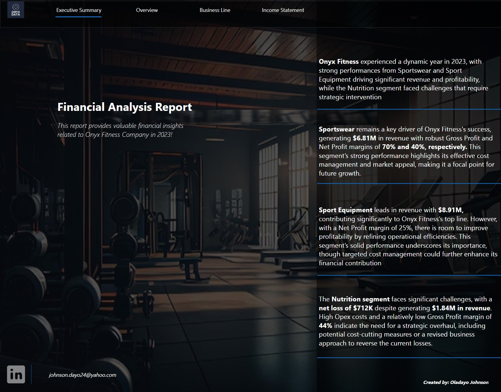

September 09, 2024
This report delves into key trends and performance metrics within the e-commerce space. Using Power BI, I have analyzed sales data, customer behavior, and profitability to provide actionable insights for business growth. Click below to explore the full analysis and see how data drives e-commerce success.
 

This report provides valuable financial insights into Onyx Fitness Company in 2023!

I have also developed a comprehensive Mobile App Game Report, where I analyzed player data, performance metrics, and user behavior to provide insights that drive game development and engagement strategies.

I have completed a detailed Sales Analysis Report, where I explored sales trends, performance metrics, and profitability to uncover actionable insights that support strategic business decisions.

I have completed a comprehensive SQL Project: Exploring Supermarket Sales Data, where I used advanced SQL queries such as JOINs, GROUP BY, and WINDOW FUNCTIONS to analyze sales trends, customer behavior, and product performance. This project provided deep insights into sales patterns and supported strategic decision-making.

I have completed a thorough SQL Project: Analyzing Sales and Customer Data in AdventureWorks2019, where I applied advanced SQL techniques like CTEs, JOINs, and AGGREGATE FUNCTIONS to analyze customer demographics, sales performance, and product trends, providing actionable insights for business development.